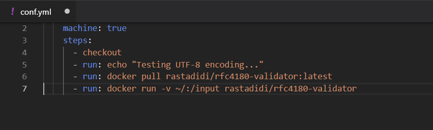
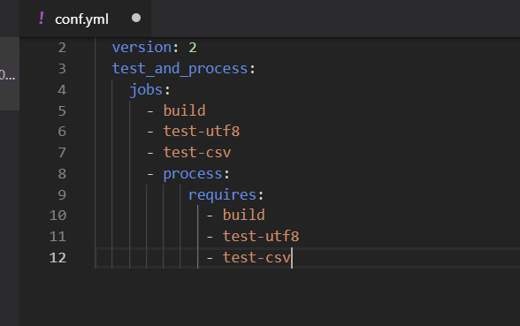
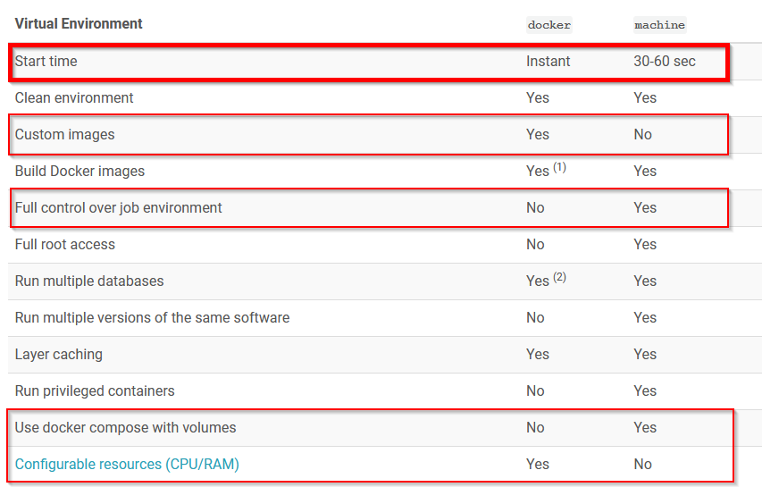

Releaser plus vite & mieux.
De la CI à la "micro CI" avec Docker/Jib & CircleCI.
Stack actuelle
- Build : Java/Gradle
- CI : Jenkins
- VCS : Gitlab
- Conteneurisation : Docker (compose) sur postes développeurs
- Les jar exécutables via Spring Boot
Observations
- Jenkins parfois planté
- Longueur de certains runs ("mais ça passe sur mon poste...")
- Tests unitaires
- Analyse statique de code
- Complexité croissante des tests
- Besoin de partager des tests entre équipes
Ressources Jenkins
- File d'attente parfois importante
- Certains projets très gourmands qui impactent les autres (ex: SIDO), voire l'infra
- Contension mémmoire/CPU,...
- Serveur(s) dédié(s),...
Evolution des besoins : tests d'intégration
- Nécessité d' "infra montée à la demande sur des besoins toujours plus variés"
- Grande variété de middlewares (ELK, Postgres, Oracle, Dév spécifiques, ...)
- Workflows métiers toujours plus complexes
"Left-Shifter" la maintenance
- Exemple GLIA/OA : test "cross-projets" manquants cause de régressions/incidents
- Forte spécificité/métier & scope des équipes
- Difficulté pour une équipe unique de concevoir/maintenir les tests des traitements directement et indirectement connexes
Besoin de simplification
Factoriser la maintenance de tests complexes dans un contexte de CI.
Workflow & Transversalité
Splitter la CI en segments afin d'en simplifier le développement,
l'exploitation et la maintenance.
Diffuser le test
Etendre la culture du test à de nouvelles équipes.
Exemple : mocker un load sqlloader
Design d'une solution
- Développer de petites "boîtes de test"
- Déployer/Releaser sur un dépôt
- Configurer un workflow de CI
L'unité de test : la "boîte"
Développer un outil qui exécute très bien et facilement une tâche/process au périmètre
très restreint.
Plus de spéc' (?!)
on demande la boîte de test à la partie demandeuse de l'intégration, et à
qui le développement & la maintenance reviennent durant tout le cycle de vie du
processus : projet puis exploitation.
Google Container Tools/jib
- "multiple layers for more granular incremental builds."
- "When you change your code, only your changes are rebuilt, not your entire application"
- Utilisation de "Distroless" comme image de base
- Pas de Dockerfile (pur Gradle/Maven)
- Pas de daemon docker sur le poste du développeur
Jib / Maven : configuration
...
com.google.cloud.tools
jib-maven-plugin
1.2.0
gcr.io/my-project/image-built-with-jib
Jib / Maven : build
# Builds to a container image registry.
$ mvn compile jib:build
Jib / Gradle : configuration
plugins {
id 'com.google.cloud.tools.jib' version '0.9.0'
}
jib.to.image = 'gcr.io/my-project/image-built-with-jib'
Jib / Gradle : build
# Builds to a container image registry.
$ gradle jib
La "micro CI"
- Déployer la boîte comme image Docker via GoogleContainerTools/jib
- Stratégie "diviser pour mieux régner"
- Centralisation pour maintenance aisée
- Intégré à la CI
- Facile à partager/intégrer (via dépôts)
La CI : réserve de ressources système
Utiliser le moteur de CI pour accéder à la conteneurisation.
Cas pratique : exiger de l' UTF-8
- Mettre à disposition une boîte qui teste l'encoding de fichiers d'un répertoire donné
- Dév d'un jar exécutable qui teste tous les fichiers dans un ~/input
Build/deploiement de la Boîte
mvn compile jib:build
Configurer le Job de check UTF-8

Workflow : configuration

Points forts
- Techno agnostique (Java, Python, Ruby, ...)
- Split code de test vs. / worflows CI
- Facilité de distribution
- Conception de test collaboratif
- "Micro-testing"
- Cross Teams pipelines : transversalité
"Left-Shifting" sur les ressources
Porter dès la phase de test les contraintes de ressources, privilèges et performances

"Micro-CI units"
Confortable, flexible et outil de transition en douceur vers la conteneurisation.